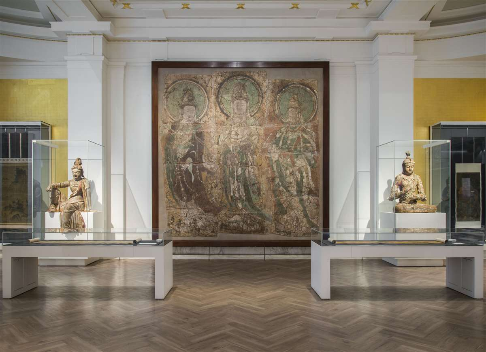

| 三菩萨壁画 | |
| 中国 河北省 | |
|
此壁画描绘了三菩萨立像，各带有显著头光。中间的菩萨为观世音，他头戴宝冠，冠上有阿弥陀佛像。左边是普贤菩萨，他手持拂子，头冠有三宝。右边是文殊菩萨，他的头冠亦有一佛像，并持如意。 河北省清凉寺建立于1183年。一段1485年的题字记录了寺院的壁画是山西省五台山寺院于1424年委派僧人到清凉寺绘制的，后来于1437年和1468年重修。清凉寺是佛教信众往返五台山朝圣源途中的重要一站。 W. M. Weinberger于1925年间获得此壁画。根据他的笔记，当时的清凉寺有三殿，已荒废。第一殿内有残破的大型木雕佛像，周围有小型塑像。第二殿内有大型坐佛雕塑，后方有一幅比佛像高很多的马蹄形背屏，上部较宽。此背屏后另有尺寸更大的木架，承载着三菩萨壁画。壁画在石膏面上绘制，最底层的干土附在木架上。此壁画从原本的木架上被移除，分成12块运回伦敦。收藏家乔治•尤摩弗帕勒斯购入此壁画，并于1927年把它捐赠给大英博物馆。清凉寺于20世纪30和40年代间毁于战火  |
|